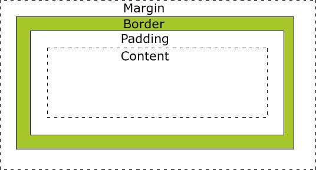

CSS
Cascading style sheets
Css style kan enten placeres embedded i html dokumentet eller ekstern i dokumentet med et link fra html koden over til css stylesheetet. Linket fra html dokumentet til css stylesheet vil være placeret i head-tagget

Selectors
ID og Class
Hvis der arbejdes med id, er selectoren i css’en et hastag (#). Det skal sættes foran id’et i css’en. Når der er et bestemt element fra html dokumentet, der skal styles kan der indsættes en id, på den måde kan man i css stylesheetet style det specifikke id. Når der arbejdes med class, skal der i css’en er selector et punktum (.) punktummet skal forekomme foran teksten fra class.
Box model
Box model bruges I css, her er der tale om layoutet og design. Modellen er bokse som wrapper rundt om html elementerne. Box model indeholder, Margin, Border, Padding og content. Margin er afstanden mellem ramme og de tilstødende elementer Border er en ramme som både kan være usynlig eller synlig. Padding er afstanden mellem indholdet og rammen. Content er hvor indholdet, som tekst og billeder vil være.
Textstyles
Det er forskelligt fra computer til computer hvilke fonte der findes på dem som standart. Hvis man vil have en speciel eller speciffik font, skal der noget kode til. Man kan gøre dette ved enten at indsætte font koden i sit projekt og efter linke til sit css stylesheet, man kan også vælge at gøre brug af fonte som er hostet af andre f.eks. google fonts.
Hvis man vælger en font fra google fonts, skal linket placeres i <head>
- Font-size: Bruges til at ændre størrelsen på fonten, der er flere forskellige måder at angive størrelsen f.eks. i procent, em eller px.
- Font-style: angiver om teksten skal være almindelig eller krusiv
- Font-weight: Man vælger her hvor fed ens font skal være. Her kan der altså vælges som teksten skal være normal eller bold. og ellers kan de angives i tal fra 100 til 900
- Google fonts